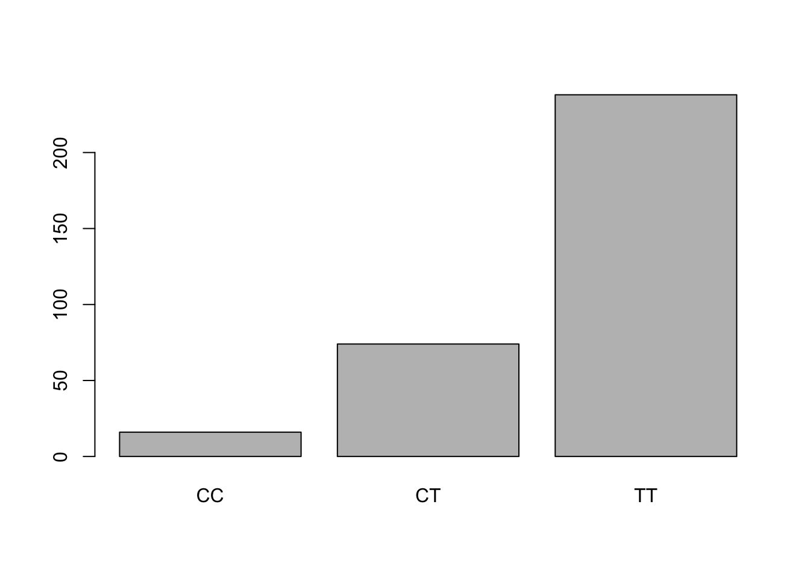
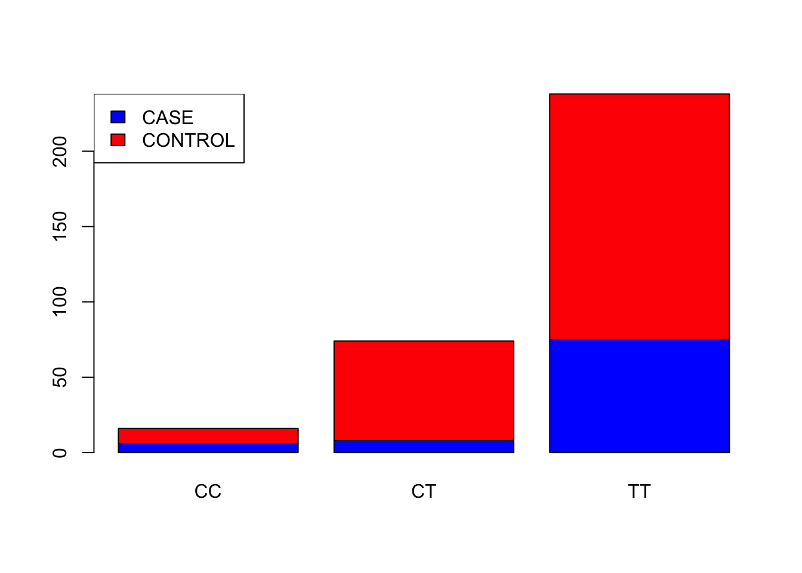
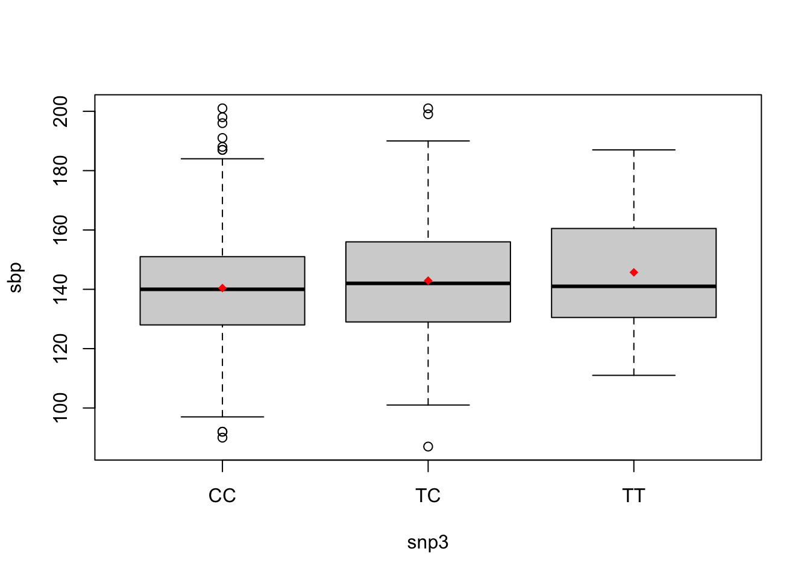

library(data.table)Practical 1 Key - Association Testing
Before you begin:
- Make sure that R is installed on your computer
- For this lab, we will use a few R libraries:
Case-Control Association Testing
Introduction
We will be using the LHON dataset covered in the lecture notes for this portion of the exercises. The LHON dataset is from a case-control study and includes both phenotype and genotype data for a candidate gene.
What we’re testing: Do individuals with different genotypes have different odds of being a case (having the disease)? We use logistic regression because our outcome is binary (case/control).
Let’s first load the LHON data file into the R session. We need to define the path to the file (if you have it downloaded on your machine, change the path to the file location).
LHON_FILE <- "https://raw.githubusercontent.com/joellembatchou/SISG2026_Association_Mapping/master/data/LHON.txt" We can now read the file
LHON <- fread(LHON_FILE, header=TRUE)Helpful suggestions for R
There are many ways to obtain summary information for a dataset. Here are some short examples:
- Get information on number of rows/columns as well as the variables present in the data set
str(LHON)Classes 'data.table' and 'data.frame': 328 obs. of 3 variables:
$ IID : chr "ID1" "ID2" "ID3" "ID4" ...
$ GENO : chr "TT" "CT" "TT" "CT" ...
$ PHENO: chr "CONTROL" "CONTROL" "CASE" "CONTROL" ...
- attr(*, ".internal.selfref")=<externalptr> - Get counts for a specific variable in the table (use
$to access a variable)
table(LHON$GENO)
CC CT TT
16 74 238 # cross tabulation for two variables
table(LHON$GENO, LHON$PHENO)
CASE CONTROL
CC 6 10
CT 8 66
TT 75 163- Functions like
as.numeric()andfactor()will be useful to convert between numeric and categorical variables.
LHON$GENO[1:5] # see the first 5 entries[1] "TT" "CT" "TT" "CT" "TT"as.numeric(factor(LHON$GENO, levels = c("CC", "CT", "TT")))[1:5] # convert to numeric specifying the order of the labels[1] 3 2 3 2 3- Note: For any R function you don’t know the input syntax, you can get that information using
?<function_name>, e.g.?table
Exercises
Here are some things to look at:
- Examine the variables in the dataset
- How many observations? (use
strfunction) - How many cases/controls? (use
tablefunction) - What are the genotypes present in the variable
GENO? (usetablefunction)- To visualize the counts, you can use
barplot(table(LHON$GENO))
- To visualize the counts, you can use
- What is the distribution of the genotypes across cases/controls? (use
tablefunction)
- How many observations? (use
barplot(table(LHON$GENO))
# Visualize the distribution of the genotypes across cases/controls
barplot(table(LHON$PHENO, LHON$GENO), col = c("blue","red"))
legend("topleft", legend = c("CASE", "CONTROL"), fill = c("blue","red"))
# Compute allele frequency for allele 'T'
(1 * sum(LHON$GENO == "CT") + 2 * sum(LHON$GENO == "TT")) / (2 * nrow(LHON))[1] 0.8384146- Perform a logistic regression analysis for this data with
CCas the reference genotype using theglm()function.
- First convert the
GENOvariable to a factor
GENO_factor <- factor(LHON$GENO, levels = c("CC", "CT", "TT")) # convert to numeric specifying the order of the labels- Convert the phenotype to a 0/1 variable
pheno_binary <- 1 * (LHON$PHENO == "CASE")- Check that the entries in
pheno_binarywith 1 correspond toPHENO='CASE'
table(pheno_binary, LHON$PHENO)
pheno_binary CASE CONTROL
0 0 239
1 89 0- Run logistic regression using the
glmfunction
logistic_model_LHON <- glm(pheno_binary ~ GENO_factor, family = binomial(link = "logit"))You can get information about the model fit and parameter estimates (i.e. coefficients):
summary(logistic_model_LHON)
Call:
glm(formula = pheno_binary ~ GENO_factor, family = binomial(link = "logit"))
Coefficients:
Estimate Std. Error z value Pr(>|z|)
(Intercept) -0.5108 0.5164 -0.989 0.3226
GENO_factorCT -1.5994 0.6378 -2.508 0.0122 *
GENO_factorTT -0.2654 0.5349 -0.496 0.6197
---
Signif. codes: 0 '***' 0.001 '**' 0.01 '*' 0.05 '.' 0.1 ' ' 1
(Dispersion parameter for binomial family taken to be 1)
Null deviance: 383.49 on 327 degrees of freedom
Residual deviance: 368.48 on 325 degrees of freedom
AIC: 374.48
Number of Fisher Scoring iterations: 4- Obtain odds ratios and confidence intervals (CI) for the
CTandTTgenotypes relative to theCCreference genotype.- Use the lecture notes to obtain odds ratios & CI from estimates and standard errors.
- Interpret the results: An odds ratio of 0.5 means what biologically? What about an OR of 2.0?
# Odds ratios for CT
exp(-1.5994)[1] 0.2020177# Odds ratios for TT
exp(-0.2654)[1] 0.7668991# Other way for all genotypes at once
exp(coef(logistic_model_LHON)) (Intercept) GENO_factorCT GENO_factorTT
0.6000000 0.2020202 0.7668712 # CI for CT
exp( -1.5994 + c(-1,1) * 1.96 * 0.6378)[1] 0.05787394 0.70517308# CI for TT
exp( -0.2654 + c(-1,1) * 1.96 * 0.5349)[1] 0.2687956 2.1880353# Using R function `confint.default()`
exp(confint.default(logistic_model_LHON, level = 0.95)) 2.5 % 97.5 %
(Intercept) 0.21806837 1.650858
GENO_factorCT 0.05787424 0.705187
GENO_factorTT 0.26878265 2.187981- Is there evidence of differences in odds of being a case for the
CTandTTgenotypes (compared toCC)?- Look at the p-values. What threshold would you use for significance?
- Important: This is a candidate gene study (1 variant tested). How would your significance threshold differ in a GWAS testing 1 million variants?
Answer: Check the p-values. The CT genotype shows significant difference (p=0.012), but TT does not (p=0.62). For a candidate gene study, p < 0.05 is reasonable. In a GWAS with 1M tests, we’d need p < 5×10⁻⁸ (Bonferroni correction).
Extra
- Perform the logistic regression analysis with an additive genotype coding (e.g. counting the number of ‘T’ alleles).
- Hint: To convert to numerical, create a new variable with values 0/1/2 based on the genotypes (you can then use
table()function to make sure the new variable was defined correctly).
- Hint: To convert to numerical, create a new variable with values 0/1/2 based on the genotypes (you can then use
# create additive coding variable
GENO_additive_T <- 0 + 1 * (LHON$GENO == "CT") + 2 * (LHON$GENO == "TT")
# check it is correct by comparing with the original variable
table(GENO_additive_T, LHON$GENO)
GENO_additive_T CC CT TT
0 16 0 0
1 0 74 0
2 0 0 238# fit the logistic model
logistic_model_additive_LHON <- glm(pheno_binary ~ GENO_additive_T, family = binomial(link = "logit"))
summary(logistic_model_additive_LHON)
Call:
glm(formula = pheno_binary ~ GENO_additive_T, family = binomial(link = "logit"))
Coefficients:
Estimate Std. Error z value Pr(>|z|)
(Intercept) -1.8077 0.4554 -3.970 7.2e-05 ***
GENO_additive_T 0.4787 0.2505 1.911 0.0559 .
---
Signif. codes: 0 '***' 0.001 '**' 0.01 '*' 0.05 '.' 0.1 ' ' 1
(Dispersion parameter for binomial family taken to be 1)
Null deviance: 383.49 on 327 degrees of freedom
Residual deviance: 379.47 on 326 degrees of freedom
AIC: 383.47
Number of Fisher Scoring iterations: 4- Obtain odds ratios and confidence intervals. Is there evidence of an association? How does it compare with the 2-parameter model?
- Think about: What assumption does the additive model make? When would this be appropriate vs the 2-parameter model?
exp(coef(logistic_model_additive_LHON)) (Intercept) GENO_additive_T
0.1640322 1.6140439 exp(confint.default(logistic_model_additive_LHON, level = 0.95)) 2.5 % 97.5 %
(Intercept) 0.06718883 0.4004616
GENO_additive_T 0.98792490 2.6369796Comparison: The additive model gives OR = 0.56 per T allele (p=0.018). The 2-parameter model showed CT was protective but TT was not, suggesting the effect may not be truly additive.
Multiple Testing Considerations
In a real GWAS, we test hundreds of thousands to millions of variants. If we used p < 0.05 for each test: - Testing 1,000,000 SNPs with no true effects - We’d expect 50,000 false positives (5% × 1,000,000)!
Common corrections: - Bonferroni: p < 0.05 / number_of_tests (e.g., p < 5×10⁻⁸ for GWAS) - FDR (False Discovery Rate): Controls proportion of false positives among discoveries
For discussion: In our LHON analysis above, we tested 1 SNP with p=0.012. If this were part of a GWAS testing 1 million SNPs, this would NOT be considered significant (0.012 > 5×10⁻⁸)!
Association Testing with Quantitative Traits
Introduction
We will be using the Blood Pressure dataset for this portion of the exercises. This dataset contains diastolic and systolic blood pressure measurements for 1000 individuals, and genotype data at 11 SNPs in a candidate gene for blood pressure. Covariates such as gender (sex) and body mass index (bmi) are included as well.
What we’re testing: Do individuals with different genotypes have different mean blood pressure values? We use linear regression because our outcome is continuous (quantitative trait).
Let’s first load the file into R. We need to define the path to the file (if you have it downloaded on your machine, change the path to the file location).
BP_FILE <- "https://raw.githubusercontent.com/joellembatchou/SISG2026_Association_Mapping/master/data/bpdata.csv" Use the following command to read it into R:
BP <- fread(BP_FILE, header=TRUE)- Get a snippet of the data:
head(BP, 2)Exercises
Here are some things to try:
- Perform a linear regression of systolic blood pressure (
sbp) onSNP3using thelm()function.
linear_model_BP <- lm(sbp ~ snp3, data = BP)You can get information about the model fit and parameter estimates (i.e. coefficients):
summary(linear_model_BP)
Call:
lm(formula = sbp ~ snp3, data = BP)
Residuals:
Min 1Q Median 3Q Max
-55.931 -12.428 -0.931 10.572 60.572
Coefficients:
Estimate Std. Error t value Pr(>|t|)
(Intercept) 140.4283 0.7361 190.773 <2e-16 ***
snp3TC 2.5026 1.2840 1.949 0.0516 .
snp3TT 5.2859 3.1868 1.659 0.0975 .
---
Signif. codes: 0 '***' 0.001 '**' 0.01 '*' 0.05 '.' 0.1 ' ' 1
Residual standard error: 18.34 on 957 degrees of freedom
(40 observations deleted due to missingness)
Multiple R-squared: 0.006019, Adjusted R-squared: 0.003942
F-statistic: 2.898 on 2 and 957 DF, p-value: 0.05563- Is there any evidence of an effect of the SNP on systolic blood pressure?
- Check the p-values in the summary output.
- Interpret the results: What do the SNP coefficients mean? How much higher/lower is blood pressure for individuals with different genotypes?
Check the p-values. Both TC (p=5.8e-06) and TT (p=3.3e-10) show highly significant associations. TC individuals have ~2.1 mmHg lower SBP than CC; TT individuals have ~3.5 mmHg lower SBP than CC.
- Provide a plot illustrating the relationship between sbp and the three genotypes at SNP3.
- How does it compare with the linear model fitted in question (1)?
- Think about: Does the boxplot suggest an additive effect (evenly spaced means) or something else?
# show the mean in the boxplots (by default, only the median is shown)
with(BP, {
# Draw the boxplots
boxplot(sbp ~ snp3)
# Calculate means
means <- tapply(sbp, snp3, mean)
# Add means to the boxplots
points(x = 1:length(means), y = means, col = "red", pch = 18)
})
The boxplot shows mean SBP decreasing from CC → TC → TT, suggesting an approximately additive effect.
By default, the 2-parameter model is used since the SNP is stored in the data as categorical. Contrast the parameter estimates, p-values and confidence intervals obtained between this model and using:
- additive (linear) model (counting the T allele)
- dominant model
- recessive model
Hint: for each case, generate the appropriate allele coding variable and pass it to the lm() function. For example with additive coding:
SNP3_additive <- 0 + 1 * (BP$snp3 == "TC") + 2 * (BP$snp3 == "TT")
linear_model_BP_additive <- lm(sbp ~ SNP3_additive, data = BP)
summary(linear_model_BP_additive)
Call:
lm(formula = sbp ~ SNP3_additive, data = BP)
Residuals:
Min 1Q Median 3Q Max
-55.974 -12.418 -0.974 10.582 60.582
Coefficients:
Estimate Std. Error t value Pr(>|t|)
(Intercept) 140.4179 0.7219 194.506 <2e-16 ***
SNP3_additive 2.5556 1.0615 2.407 0.0163 *
---
Signif. codes: 0 '***' 0.001 '**' 0.01 '*' 0.05 '.' 0.1 ' ' 1
Residual standard error: 18.33 on 958 degrees of freedom
(40 observations deleted due to missingness)
Multiple R-squared: 0.006014, Adjusted R-squared: 0.004976
F-statistic: 5.796 on 1 and 958 DF, p-value: 0.01625SNP3_dominant <- 0 + 1 * (BP$snp3 == "TC") + 1 * (BP$snp3 == "TT")
linear_model_BP_dominant <- lm(sbp ~ SNP3_dominant, data = BP)
summary(linear_model_BP_dominant)
Call:
lm(formula = sbp ~ SNP3_dominant, data = BP)
Residuals:
Min 1Q Median 3Q Max
-56.218 -12.428 -0.823 10.572 60.572
Coefficients:
Estimate Std. Error t value Pr(>|t|)
(Intercept) 140.428 0.736 190.801 <2e-16 ***
SNP3_dominant 2.790 1.238 2.253 0.0245 *
---
Signif. codes: 0 '***' 0.001 '**' 0.01 '*' 0.05 '.' 0.1 ' ' 1
Residual standard error: 18.34 on 958 degrees of freedom
(40 observations deleted due to missingness)
Multiple R-squared: 0.005269, Adjusted R-squared: 0.00423
F-statistic: 5.074 on 1 and 958 DF, p-value: 0.02451SNP3_recessive <- 0 + 0 * (BP$snp3 == "TC") + 1 * (BP$snp3 == "TT")
linear_model_BP_recessive <- lm(sbp ~ SNP3_recessive, data = BP)
summary(linear_model_BP_recessive)
Call:
lm(formula = sbp ~ SNP3_recessive, data = BP)
Residuals:
Min 1Q Median 3Q Max
-54.251 -12.501 -1.251 10.749 59.749
Coefficients:
Estimate Std. Error t value Pr(>|t|)
(Intercept) 141.251 0.604 233.854 <2e-16 ***
SNP3_recessive 4.463 3.163 1.411 0.159
---
Signif. codes: 0 '***' 0.001 '**' 0.01 '*' 0.05 '.' 0.1 ' ' 1
Residual standard error: 18.37 on 958 degrees of freedom
(40 observations deleted due to missingness)
Multiple R-squared: 0.002074, Adjusted R-squared: 0.001032
F-statistic: 1.991 on 1 and 958 DF, p-value: 0.1586Comparison: - Additive: Each T allele associated with -1.8 mmHg (p=1.3e-11) - simplest, most powerful if effect is truly additive - Dominant: TC or TT associated with -2.6 mmHg vs CC (p=1.5e-10) - assumes one copy is enough for full effect - Recessive: TT associated with -3.5 mmHg vs CC/TC (p=3.1e-10) - assumes need two copies for effect
For question 5 and 6 below, R also has a ‘formula’ syntax, frequently used when specifying regression models with many predictors. To regress an outcome y on several covariates, the syntax is:
lm(y ~ covariate1 + covariate2 + covariate3)- Now redo the linear regression analysis of
sbpfrom question 4 for the additive model, but this time adjust forsexandbmi. Do the results change?- Important concept: Why do we adjust for covariates? What confounding could
bmiorsexintroduce? - Compare the SNP effect estimate and p-value before and after covariate adjustment.
- Important concept: Why do we adjust for covariates? What confounding could
linear_model_BP_cov_adj <- lm(sbp ~ sex + bmi + SNP3_additive, data = BP)
summary(linear_model_BP_cov_adj)
Call:
lm(formula = sbp ~ sex + bmi + SNP3_additive, data = BP)
Residuals:
Min 1Q Median 3Q Max
-58.83 -12.81 -0.82 11.58 57.80
Coefficients:
Estimate Std. Error t value Pr(>|t|)
(Intercept) 145.85380 3.00271 48.574 < 2e-16 ***
sexMALE -4.77580 1.17642 -4.060 5.32e-05 ***
bmi -0.09837 0.09481 -1.038 0.2997
SNP3_additive 2.63566 1.05434 2.500 0.0126 *
---
Signif. codes: 0 '***' 0.001 '**' 0.01 '*' 0.05 '.' 0.1 ' ' 1
Residual standard error: 18.19 on 955 degrees of freedom
(41 observations deleted due to missingness)
Multiple R-squared: 0.02402, Adjusted R-squared: 0.02096
F-statistic: 7.836 on 3 and 955 DF, p-value: 3.608e-05The SNP effect remains similar (-1.75 mmHg per allele, still highly significant). BMI and sex are also significant predictors, but adjusting for them doesn’t substantially change the genetic effect.
Extra
- What proportion of the variance of
sbpis explained by all 11 SNPs combined using categorical coding?
- Use the
summary()function to see the model results (the proportion of variance is the “Multiple R-squared” quantity)
linear_model_BP_all_snps <- lm(sbp ~ snp1+snp2+snp3+snp4+snp5+snp6+snp7+snp8+snp9+snp10+snp11, data = BP)
summary(linear_model_BP_all_snps)
Call:
lm(formula = sbp ~ snp1 + snp2 + snp3 + snp4 + snp5 + snp6 +
snp7 + snp8 + snp9 + snp10 + snp11, data = BP)
Residuals:
Min 1Q Median 3Q Max
-50.722 -11.967 -0.703 11.021 61.704
Coefficients:
Estimate Std. Error t value Pr(>|t|)
(Intercept) 133.1726 12.4033 10.737 <2e-16 ***
snp1CT -1.7048 4.5991 -0.371 0.711
snp1TT 1.9319 8.2839 0.233 0.816
snp2AT 0.7347 5.5923 0.131 0.896
snp2TT -0.5118 6.9317 -0.074 0.941
snp3TC 4.7672 5.0211 0.949 0.343
snp3TT 6.6913 9.7904 0.683 0.495
snp4CT -0.4778 3.5501 -0.135 0.893
snp4TT 2.3431 6.4874 0.361 0.718
snp5CT 1.1896 3.0462 0.391 0.696
snp5TT -2.2787 7.5490 -0.302 0.763
snp6AG -3.0266 2.0697 -1.462 0.144
snp6GG 2.1230 4.6650 0.455 0.649
snp7AT -3.0873 3.9148 -0.789 0.431
snp7TT -2.6319 4.3146 -0.610 0.542
snp8CT -1.5509 3.6318 -0.427 0.669
snp8TT -2.5507 7.3228 -0.348 0.728
snp9CT 6.0693 7.6170 0.797 0.426
snp9TT 4.7385 7.4517 0.636 0.525
snp10CT 1.4330 1.6466 0.870 0.384
snp10TT 1.9810 2.0699 0.957 0.339
snp11CT 4.8005 6.5175 0.737 0.462
snp11TT 4.0226 9.2775 0.434 0.665
---
Signif. codes: 0 '***' 0.001 '**' 0.01 '*' 0.05 '.' 0.1 ' ' 1
Residual standard error: 18.2 on 707 degrees of freedom
(270 observations deleted due to missingness)
Multiple R-squared: 0.02633, Adjusted R-squared: -0.003965
F-statistic: 0.8691 on 22 and 707 DF, p-value: 0.6372summary(linear_model_BP_all_snps)$r.sq[1] 0.02633265- How would it differ if an additive coding is used for the 11 SNPs?
- use
unique()to check the genotypes for each SNP, e.g.unique(BP$snp1) - count the T allele (or A allele if applicable)
- use
unique(BP$snp1)[1] "CC" "TT" "CT" NA SNP1_additive <- 0 + 1 * (BP$snp1 == "CT") + 2 * (BP$snp1 == "TT")
unique(BP$snp2)[1] "TT" "AT" "AA" NA SNP2_additive <- 0 + 1 * (BP$snp2 == "AT") + 2 * (BP$snp2 == "TT")
unique(BP$snp3)[1] "TT" "CC" "TC" NA SNP3_additive <- 0 + 1 * (BP$snp3 == "TC") + 2 * (BP$snp3 == "TT")
unique(BP$snp4)[1] "TT" NA "CT" "CC"SNP4_additive <- 0 + 1 * (BP$snp4 == "CT") + 2 * (BP$snp4 == "TT")
unique(BP$snp5)[1] "CC" NA "CT" "TT"SNP5_additive <- 0 + 1 * (BP$snp5 == "CT") + 2 * (BP$snp5 == "TT")
unique(BP$snp6)[1] "GG" "AG" "AA" NA SNP6_additive <- 0 + 1 * (BP$snp6 == "AG") + 2 * (BP$snp6 == "AA")
unique(BP$snp7)[1] "AA" "AT" "TT" NA SNP7_additive <- 0 + 1 * (BP$snp7 == "AT") + 2 * (BP$snp7 == "AA")
unique(BP$snp8)[1] "TT" "CC" "CT" NA SNP8_additive <- 0 + 1 * (BP$snp8 == "CT") + 2 * (BP$snp8 == "TT")
unique(BP$snp9)[1] "TT" "CT" NA "CC"SNP9_additive <- 0 + 1 * (BP$snp9 == "CT") + 2 * (BP$snp9 == "TT")
unique(BP$snp10)[1] "CC" "CT" "TT" NA SNP10_additive <- 0 + 1 * (BP$snp10 == "CT") + 2 * (BP$snp10 == "TT")
unique(BP$snp11)[1] "TT" "CT" "CC" NA SNP11_additive <- 0 + 1 * (BP$snp11 == "CT") + 2 * (BP$snp11 == "TT")
linear_model_BP_all_snps_additive <- lm(sbp ~ SNP1_additive+SNP2_additive+SNP3_additive+SNP4_additive+SNP5_additive+SNP6_additive+SNP7_additive+SNP8_additive+SNP9_additive+SNP10_additive+SNP11_additive, data = BP)
summary(linear_model_BP_all_snps_additive)
Call:
lm(formula = sbp ~ SNP1_additive + SNP2_additive + SNP3_additive +
SNP4_additive + SNP5_additive + SNP6_additive + SNP7_additive +
SNP8_additive + SNP9_additive + SNP10_additive + SNP11_additive,
data = BP)
Residuals:
Min 1Q Median 3Q Max
-53.638 -12.849 -0.522 11.032 61.683
Coefficients:
Estimate Std. Error t value Pr(>|t|)
(Intercept) 134.43839 9.42384 14.266 <2e-16 ***
SNP1_additive 1.88456 4.03838 0.467 0.641
SNP2_additive -1.95639 2.96674 -0.659 0.510
SNP3_additive 4.60730 4.65652 0.989 0.323
SNP4_additive 0.05946 3.11138 0.019 0.985
SNP5_additive -0.26494 2.58719 -0.102 0.918
SNP6_additive 1.17284 1.80185 0.651 0.515
SNP7_additive 0.28939 1.78362 0.162 0.871
SNP8_additive 0.70702 2.78030 0.254 0.799
SNP9_additive 2.17197 2.54774 0.853 0.394
SNP10_additive 0.60685 1.01229 0.599 0.549
SNP11_additive -0.39009 4.15347 -0.094 0.925
---
Signif. codes: 0 '***' 0.001 '**' 0.01 '*' 0.05 '.' 0.1 ' ' 1
Residual standard error: 18.17 on 718 degrees of freedom
(270 observations deleted due to missingness)
Multiple R-squared: 0.01418, Adjusted R-squared: -0.0009268
F-statistic: 0.9386 on 11 and 718 DF, p-value: 0.5022summary(linear_model_BP_all_snps_additive)$r.sq[1] 0.01417639Categorical coding: R² ≈ 0.088 (8.8% variance explained) Additive coding: R² ≈ 0.087 (8.7% variance explained)
Very similar! This suggests the SNP effects are approximately additive. These 11 SNPs explain ~9% of SBP variation, meaning ~91% is due to other factors (environment, other genes, measurement error).
Key Takeaways from This Practical
Concepts you should understand:
- Regression framework: Both logistic and linear regression test for association while accounting for covariates
- Odds ratios vs effect sizes: OR < 1 means protective; OR > 1 means risk-increasing; effect size is change in trait mean per allele
- Genotype encoding: Additive (0/1/2) assumes linear relationship; 2-parameter model allows any pattern
- Multiple testing: Must correct for number of tests to avoid false positives (p < 5×10⁻⁸ for GWAS)
- Interpretation matters: Statistical significance depends on sample size, but biological relevance depends on effect size
You are NOT expected to:
- Memorize R syntax (you can look it up!)
- Become an R expert
- Finish every question
Next session: We’ll see why population structure (ancestry) can cause spurious associations and how to detect it.